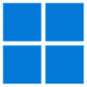
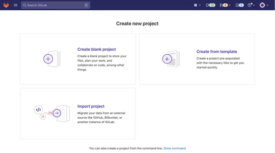
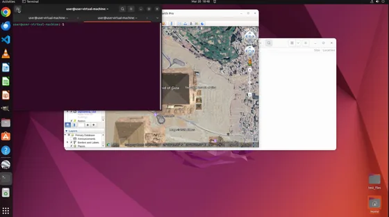

- 2026-07 The OSReward project page is live. Paper, code, benchmark, corpus and model checkpoints are on their way.
How reliable is a VLM judge for CUA trajectories?
A CUA trajectory is the interleaved record of an agent's screens, actions and reasoning. Deciding whether it fulfilled its instruction is the reward signal behind evaluation, data curation and reinforcement learning. Human-written verifiers cover only a handful of curated tasks and cannot inspect a static corpus at all; human annotation cannot keep pace. The field has therefore settled on vision-language models as judges — without ever measuring how reliable those judges are.
OSReward measures it, on trajectories built for the purpose rather than recycled from benchmarks whose own flaws would be indistinguishable from judge error.
- A standardized benchmark for the CUA reward signal. 1,019 human-gold trajectories collected on cross-platform infrastructure we build and operate end to end, each labeled by three annotators with meta-review on disagreements. Read three ways: the full set, the OSReward-Hard challenge set, and OSReward-Multi for alignment and efficiency grading.
- The broadest evaluation of VLM judges for CUA to date. 27 models under one fixed protocol. Every family shares one lenient failure mode, the verdict turns out to live in the text history rather than the screen, and the aggregate ~90% collapses on hard cases. The judges reliable enough to trust cost too much to run at the scale evaluation and training demand.
- OS-Shepherd-100K, the corpus derived from those findings. The largest reasoning-annotated judge corpus for CUA to date, selected from 321,631 ensemble verdicts over self-collected rollouts and four open trajectory sets. Every sample carries the judge's reasoning, not just a binary verdict.
- Open reward models a lab can host. OS-Shepherd 9B and 35B, trained on that corpus to target the false-success mode directly, and level with commercial judges at 30–60× lower cost.
The benchmark
1,019 human-gold trajectories across web, Windows, Ubuntu and mobile, read as three views.
What we found
One shared failure mode, a text-driven verdict, and a hard set where the field collapses.
Leaderboard
27 VLM judges scored under one protocol, on both the full set and the hard set.
OS-Shepherd
An open corpus and open 9B / 35B reward models a lab can run at training scale.
The whole field leans lenient
Place every judge at its recall on truly-failed runs against its recall on truly-successful ones. Almost every point sits above the diagonal: judges accept far more failures than they reject successes.
Strict–lenient plane
Above the dashed diagonal is lenient (a failed run scored SUCCESS); below is strict. Switch to OSReward-Hard and the cloud drifts left — leniency does not just persist on hard cases, it widens. Hover any point; click a family to mute it.
Not measurable before
Human-written verifiers cover a handful of curated tasks and cannot inspect a static corpus at all. Human annotation cannot keep pace. A model judge is the only practical route — and its own reliability had gone untested.
Harder than judging text
A CUA verdict means reading a long, interleaved record of states, actions and reasoning, then deciding whether the environment truly reached the goal rather than whether the agent merely claims it did.
Built from scratch
Reusing existing benchmarks' rollouts would confound judge errors with flaws in the runs. OSReward is built on dedicated cross-platform infrastructure so a wrong verdict is attributable to the judge.
A gold set built for judging the judge
Realistic environments on four platforms, human-vetted instructions, rollouts from four agent families, and three independent annotators per trajectory — roughly 800 human hours.
From realistic environments to the gold benchmark
How each trajectory in OSReward is curated.
Realistic environments

lived-in machines, realistic
apps and live websites
Annotator setup
learn the apps, move in:
profiles, files, seeded state
Instructions
written & cross-checked
Agent rollout
with diverse backbones
Raw trajectories
screenshot · thought · action
up to 100 steps
Pre-filter
environment casualties
dropped automatically
Three annotators
independent verdicts,
a written reason each
Meta-review
two senior reviewers
deliberate the splits
OSReward
OSReward-Hard
the cases that split humans
30 / 70 success / fail
OSReward-Multi
trajectory-level alignment
and efficiency
-
1 A lived-in machine
Stock benchmark images are extended into lived-in machines — real files, user profiles, seeded databases, distractor content — and web tasks run on live sites.
real files user profiles seeded databases distractors live websites -
2 Annotators move in
Annotators learn the apps, build profiles, and seed files and state — every task starts on a machine with a history.
-
3 Instructions, cross-checked
Written against what the environment can verify — grounded, answerable, open-ended. Peer review cuts ~1,500 drafts to ~800 tasks.
fibonacci.py → LaTeX formula, render in TeXstudio → Impress PyCharm run config: main.py, env DEBUG_MODE=False “Make the video look better” — no verifiable end state -
4 Agents roll out
Each task runs on one to three executing agents across the Claude, Gemini, Kimi and Qwen families, so no single agent’s style dominates the data.
-
5 Raw trajectories
Each run is the trace a judge will read — screenshot, thought, action — up to 100 steps long.

-
6 The pre-filter
Runs wrecked by the environment — anti-bot blocks, network failures, frozen executions — are dropped before any human time is spent.
-
7 Three annotators, independently
Three independent verdicts per trajectory, each with a written reason. One strict rule: an answer the agent did not obtain or verify through the environment is a FAIL — even when it happens to be correct.
SUCCESS SUCCESS FAIL + reason, every time -
8 Unanimous, or escalated
Unanimous verdicts are final. Splits escalate — no gold verdict rests on a single reader.
-
9 Meta-review
Two senior reviewers deliberate — not a vote. Extra steps that still reach the goal pass; a wrong action fails; residual-quality runs are discarded.
extra steps, still correct goal basically reached an action is wrong -
10 The gold set
OSReward: 1,019 gold trajectories across four platforms, balanced 43 / 57 success / fail. SUCCESS carries alignment and efficiency grades; FAIL carries an error type — action, perception, planning & reasoning, memory.
Web Windows 
Ubuntu Mobile -
11 OSReward-Hard
The cases that split the annotators, re-verified in a further review — real difficulty, not annotation noise — at a 30 / 70 success / fail split.
-
12 OSReward-Multi
Successful trajectories receive trajectory-level alignment and efficiency ratings. Together: three views of one gold set.
OSReward
The full set. Four platforms, four agent families, GUI-only and GUI+CLI action spaces, from dozen-step chores to 100-step professional workflows. Balanced 43 / 57 success / fail, so binary accuracy is not majority-driven.
OSReward-Hard
A challenge subset drawn mostly from the trajectories the annotators themselves split on, each re-verified under meta-review — so the difficulty is real, not annotation error. Deceptive runs that read like completed tasks, at a 30 / 70 success / fail split.
OSReward-Multi
The successful trajectories carry human alignment (did the actions match the task intent) and efficiency (how free the run was of wasted steps) sub-labels — a finer quality grading existing CUA-judge benchmarks do not measure.
Outcome composition
The Hard set deliberately raises the share of failures, to expose how easily judges are fooled by false successes. Failed runs are markedly longer — a first sign that length confounds verification.
Platform mix
Ubuntu contributes the most trajectories and is the only platform collected in both a pure-GUI and a GUI+CLI action space.
Four things the judge study settles
27 VLM judges under one fixed protocol: read the trajectory's last N states with the per-step reasoning and action text, return a verdict. No task-specific harness, no tool access, no step-level supervision.
State-of-the-art VLMs judge CUA success at just under 90% binary accuracy, with no clear single winner — the top three sit within 0.2 pp. The open/closed gap is mostly a small-model long tail, not a frontier advantage.
Every judge family shares one dominant failure: accepting an incomplete task as a success. It is two-thirds of all errors, and it is the leading error mode of every judge at no less than 48% of its mistakes. Over-accepts outnumber over-rejects more than three to one.
The verdict lives in the text history, not the screen. Dropping the per-step thought and action text costs 7.2 pp on average and flips 22.7% of verdicts; the visual choices that look essential barely move accuracy at all.
Reliability can be bought, but not afforded. The judges that hold ~70% on OSReward-Hard cost $45–100 to judge the full set once, which does not scale to training-time reward.
Cost against accuracy
Accuracy and cost are in direct tension, sharpest on OSReward-Hard. The dashed line traces the frontier: the best accuracy reachable at each price. The OS-Shepherd models are the low-cost points nearest it.
What judges get wrong
Every incorrect verdict, labeled into over-accepts and over-rejects with three modes each. One mode dominates every family: over-accepting a task the agent never completed. That is the mechanism behind the leniency bias — the verdict leans on the agent's own closing claim.
Where the hard set bites
Mean per-judge binary accuracy on OSReward-Hard. Windows is the hardest platform to judge and mobile the easiest; failures that hinge on reading the screen — perception, then action — are markedly harder to catch than planning-and-reasoning failures, which are the dominant type in the data and legible in the thought and action text. Failure types are multi-label, so their counts exceed the number of failed trajectories.
What actually drives a verdict
Change in binary accuracy against the main setting, one input component perturbed
at a time. Removing step-level text dominates; the visual settings barely register. Aggregate accuracy
is stable, but each visually harmless setting still flips 5–7% of individual verdicts — which matters
when a label is consumed on its own, as in reward labeling. The avg column is the
mean over the eleven judges shown.
A comprehensive judge evaluation
Low success recall means a strict judge, low fail recall a lenient one. Balanced accuracy is their mean.
Main-setting results
Finer-grained grading
On OSReward-Multi every judge additionally rates alignment and efficiency. Quality grading is far weaker than outcome judging: the best judge falls from ~90% on the binary verdict to the low sixties. The AUC–macro-recall gap is the diagnostic — judges rank the levels better than they score them, so the discrimination is there but the thresholds are miscalibrated, worst on alignment.
| Macro-recall | ||||
|---|---|---|---|---|
| Judge | Align | Effic | Multi | AUC |
Judge agreement and ensembling
No model-side knob buys reliability.
- κ ≈ 0.71 — pairwise agreement among top judges. They herd on the same hard trajectories, so a wider pool mostly adds copies of the same mistake.
- 6–9% — verdicts flipped by re-running the same judge on the same input at T = 0.7. Aggregate accuracy is stable under temperature; individual labels are not, and that is what a reward model consumes.
- +1 pp — what a top-3 majority vote buys over the best single judge, at several times the cost.
- 99.2% — the oracle: accepting any pooled judge's correct verdict. The pool almost always contains a correct answer; what a vote cannot recover is which judge to trust on which trajectory.
An open reward model a lab can run on an academic budget
Reliable judging is unaffordable at the call volumes rejection sampling, RL and trajectory mining need. OS-Shepherd is trained on a corpus we release, aimed squarely at the false-success mode, and cheap enough to run at training scale.
OS-Shepherd-100K
A judge instance is one judge's verdict on one trajectory. Every kept trajectory is scored by an ensemble of strong judges under varied screenshot settings, and enters the corpus only when they independently agree — voting cannot sharpen a verdict, but corpus building, unlike evaluation, is free to discard trajectories. About 85% of judged trajectories survive the agreement filter and carry their reasoning into the training corpus.
Two-stage recipe
Start from Qwen3.5. Build accurate judging first, then target the sharpest failure the study exposes.
SFT stage
Fine-tune on the agreement-filtered corpus to judge under the main setting. This alone lifts the 9B far above its base, primarily by correcting the base model's near-total leniency.
RL stage
What SFT leaves behind is the false success — the most harmful error for a reward signal, since it directly reinforces incorrect behavior. The ability to catch it is latent rather than missing, so those cases are mined and optimized with GRPO.
Every sample carries the judge's reasoning, not just a binary verdict — the natural target, given that the verdict lives mainly in text.
How the corpus is built
Self-collected instructions are filtered, rolled out, and joined with open-source trajectories; the pool is then ensemble-judged, and only the verdicts the judges agree on are kept. The first four columns count trajectories on one scale. After that the unit changes — a judge instance is one judge's verdict on one trajectory, and the corpus is counted in training samples — so the right-hand columns are drawn on their own scale.
OS-Shepherd-9B
Moves from the bottom third of the field into the mid-tier commercial band on the full set — and holds the balanced diagonal on OSReward-Hard, catching 57.6% of hard false successes where the cheap and lenient field misses nearly all of them. At $1.36 to judge the full set, about a third cheaper than its nearest commercial tier-mate.
- OSReward accuracy
- 86.1+9.4
- OSReward-Hard accuracy
- 60.2+20.8
- Hard fail recall
- 57.6+43.5
- Base
- Qwen3.5-9B
OS-Shepherd-35B-A3B
The identical recipe at four times the parameters lands beside the 9B: a small further gain on OSReward-Hard, level full-set accuracy, the same balanced diagonal. Scale buys 2.4 pp of hard-set balanced accuracy; what transfers is the recipe. On the quality axes it grades noticeably better than the 9B.
- OSReward accuracy
- 85.6+3.4
- OSReward-Hard accuracy
- 62.7+11.6
- Hard fail recall
- 60.1+23.2
- Base
- Qwen3.5-35B-A3B
Against the untuned base
Both base models are near-total accepters: the 9B base catches 14.1% of hard failures. Training relocates the operating point rather than trading one error for another — far more failure recall, a little less success recognition, at higher balanced accuracy.
| OSReward | OSReward-Hard | |||||||
|---|---|---|---|---|---|---|---|---|
| Model | Acc | sRec | fRec | BalAcc | Acc | sRec | fRec | BalAcc |
Held-out benchmarks
Agreement with each benchmark's own human-written verifier, on matched subsets. Agreement is platform-driven, not judge-driven: every judge does best on mobile and falls well short on desktop. The OS-Shepherd models are the best open judges on OSWorld and AndroidWorld, and sit in the frontier cluster on WebArena — beating every general open model tested, up to one ~44× the 9B's size.
Leniency resistance transfers
Recall on truly-failed runs. General Qwen judges stay lenient at every size from 30B to 397B; OS-Shepherd-9B catches far more real failures on all three. The resistance is learned, and from training rather than size. None of these benchmarks' tasks or trajectories enter training — OSWorld contributes neither, making it the cleanest out-of-distribution evidence.
A single 9B, trained on none of them, carries its de-biasing across all three at a cost that scales to training-time reward. It does not yet match frontier accuracy, but closes most of the gap at a fraction of the scale — the direction a scalable CUA reward signal must move.
Data Viewer
Look at the cases yourself. Step through a trajectory the way a judge sees it — the instruction, the agent's actions and its reasoning — make your own call, then reveal what the annotators decided and how the judges scored it.
Open code, data and models
The benchmark, the training corpus, both reward models and the evaluation code are all released. Each link goes live as its artifact lands.
OSReward
1,019 gold trajectories with verdicts, plus the Hard and Multi views.
OS-Shepherd-100K
Reasoning-annotated judgments, kept from 321,631 judge instances by ensemble agreement.
OS-Shepherd 9B / 35B
Open, self-hostable reward models. Weights plus the judging prompt.
Code
Evaluation harness, the judging protocol, and the training recipe.
BibTeX
@article{sun2026osreward,
title={OSReward: Instituting Standardized Evaluation for Cross-Platform Computer-Use Reward Models},
author={Sun, Qiushi and Cheng, Kanzhi and Wang, Yian and Yang, Bowen and Yan, Hang and
Chen, Liheng and Xu, Fangzhi and Ding, Zichen and Chen, Nuo and Cao, Jialin and
Gong, Xingdong and Li, Zehao and Jin, Kaiming and Yuan, Xinfeng and Liu, Zhoumianze and
Gong, Jingyang and Yin, Zhangyue and Gao, Jiahui and Wu, Zhiyong and Xie, Tianbao and
Zhang, Jianbing and Kao, Ben and Kong, Lingpeng},
journal={arXiv preprint arXiv:2607.28609},
year={2026}
}